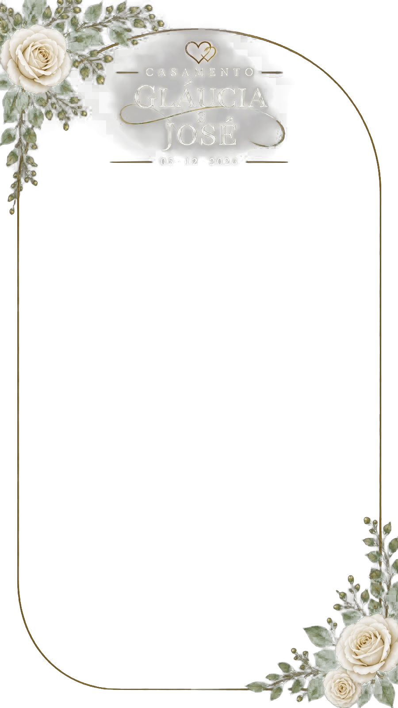

Um dia para guardar no coração
Gláucia & José
05 · 12 · 2026
Use nossa moldura especial no seu Story e compartilhe esse momento tão importante com a gente. 🤍

Como usar no seu Story
1. Toque em “Salvar minha moldura” para baixar a imagem no celular.
2. Abra o Instagram e crie um Story com a foto que deseja compartilhar.
3. Toque no ícone de figurinhas e procure “Foto / Adicionar foto”. Escolha a moldura salva na galeria.
4. Ajuste a moldura sobre a foto, publique e marque os noivos. 💍
Não conseguiu fazer pelo passo a passo?Não se preocupe! A moldura também estará disponível nos Stories do Instagram da noiva no dia da celebração. É só acessar por lá e compartilhar esse momento especial com os noivos! 🤍